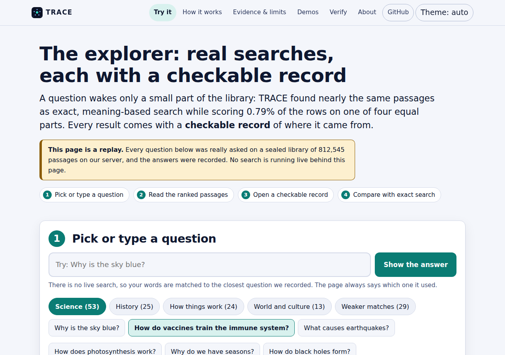
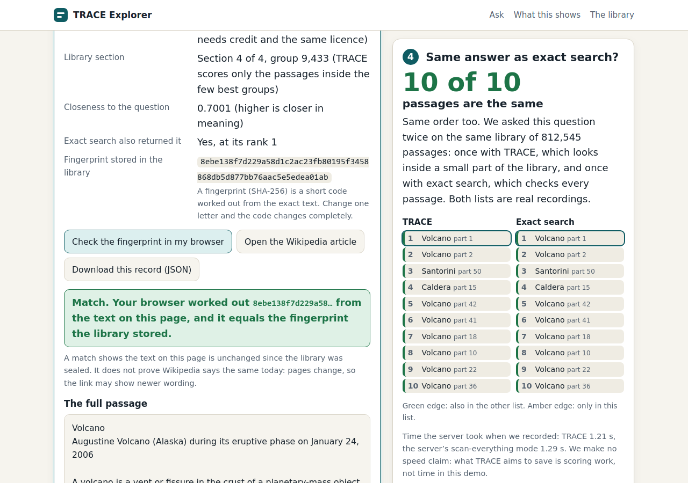

TRACE sorts a growing library into groups from the passages themselves. A question then wakes only a small part of it, and every answer comes with a record you can check.
Passages so far: 020,000 dots stand in for 812,545 passages
A library grows. New passages just arrive, in no order. Nobody files them.
An illustration, not data. 20,000 dots stand in for the 812,545 passages of our sealed library (one dot is about 41 passages). Where each dot sits, and how many groups there are, is drawn. What is real is the proportion: four equal parts, and a question waking 0.79% of one of them (50 test searches, our library and method), drawn here as 40 of 5,000 dots.
The 3-minute film is being publishedIt will appear here as soon as it is on YouTube. Until then, watch the working versions on the Demos page.
The measured result is on a sealed library of 99.9 million tokens. The larger builds are earlier tests of ours, with their own records and their own caveats, shown on each step.
Working today, our server99.9Mtokens in the sealed library: 812,545 passages
The full measured pipeline: sorted into groups, searched, every answer with a checkable record, re-run on our own server.
Short of our 100M target by 0.11% (108,154 tokens). Our own library and method; not reproduced on public data; no outside party has checked it.
Exact search matched the ground truth. With one piece switched off it still found 87% of the exact results, with no wrong passages.
Earlier test, by us. Our own records, not outside-verified. The cloud machine was shut down, so it cannot be re-run. A search took p50 4.18 s, pieces searched one at a time.
Earlier test504.5Mtokens, sealed in 13 pieces (7.65 GB stored)
Exact search matched the ground truth. With one piece switched off it still found 88.5% of the exact results, with no wrong passages.
Earlier test, by us. Our own records, not outside-verified. The machine was shut down, so it cannot be re-run. Not served at that size. The compressed-search figure (0.994 to 0.998) was measured only on the five newest pieces. A 13-piece search took p50 6.86 s, not fast.
Separate test1.53Btokens encoded into 7.13M vectors, in 109 pieces
A separate October test of group-picking only: opening 6.6% of the vectors kept 0.9947 of the exact top ten.
A different, larger collection. Not served through TRACE. No merged index, no checkable records at that size, no billion-vector run. We have not run a billion tokens through TRACE.
Plain words: a token is a word-sized piece of text. A “piece” is one sealed part of the library. Earlier tests are our own records and no outside party has verified them.
The idea in three beats
Order, then a small wake-up, then proof.
1. It sorts itself
Measured by us
Passages that mean alike end up together, and no one adds labels. The order comes from the passages.
about 7groups hold a search's ten best matchesAt most 10 are possible; groups made at random would give 10. 50 test searches, our library and method. We measured how ordered the finished groups are, not how they formed.
2. A question wakes a part
Measured by us
A question is compared with the groups first, and only the groups most likely to hold the answer are searched.
0.79%of one of four equal parts is scored per searchAbout 127 times less scoring work, and 0.9985 of exact search's top ten kept. 50 test searches, our library and method, not reproduced on public data.
3. Every answer has a record
Working today
Each result shows which article it came from, where in it, and a fingerprint your browser re-computes.
144real recorded searches you can openOur own re-run matched on all claims. No outside party has checked it. Open the explorer.

The explorer: pick a real recorded question and read the ten passages TRACE returned.

A checkable record: your browser recomputes the fingerprint and it matches.
Where each thing stands
What we set out to show
We set out to show
Where it stands today
Status
A memory that organizes itself as it grows
It is how TRACE's own store is built, and the repository holds the records of an earlier qualification run. On the 99.9M-token library the groups come from one ordinary sorting run, so we measured how ordered the finished result is, not how it formed over time. There is no growth curve yet.
Prototype
Not built yet
A question wakes only a small part
0.79% of one of four equal parts scored, 0.9985 of exact search's top ten kept. 50 test searches; our library and method.
Measured by us
A checkable record on every answer
144 real recorded searches; the fingerprint check runs in your browser. Our own re-run matched on all claims.
Working today
A cost we can state
At this size a plain scan answers sooner and our stored size on disk is bigger. Sorting the library into groups takes real time up front. We make no claim that the cost is acceptable at larger sizes.
Limit
Anyone can query it, or run it themselves
The public service is switched off. A download for your own computer is planned.
Not built yet
Not built yet
Honest limits
What we did not show
Keyword search finds the source more often.
On our 50 test searches, ordinary keyword search put the right source passage in its top ten for 82% of them. TRACE did for 52%, and exact search by meaning also got 52%, so the gap is meaning versus keywords, not our shortcut.
A plain scan takes less time per search, and our stored size on disk is bigger.
Per search: keyword 6 ms, exact scan 88 ms, TRACE 1.2 s. Stored size on disk: 2.28 GB for TRACE, 1.25 GB for plain vectors, 0.51 GB for the keyword index. TRACE's saving is scoring work, not time or space.
The headline result is for our own library and method.
It has not been reproduced on public data. A simple stand-in of ours (not TRACE itself) on three small public sets needed 7% to 28% of passages scored to keep about 95%, and under 1% kept only 52% on the largest.
Scale: not as far as it may sound.
We missed our 100M target by 0.11%. We have not run a billion tokens. The 1.53 billion item is a separate group-picking test. The 504.5M build is an earlier test by us, on a machine since shut down.
The groups come from an ordinary sorting step.
On our library it ran once. We measured how ordered the finished groups are (a search's best matches share about 7 groups, and arrival order alone gives about 8), not how they formed.
A harness that sits around AI coding agents: a hidden checker no agent can see, a ladder of helpers, and a recorded chain of decisions. TRACE is its shared memory, as a prototype link. Validated for one kind of job so far (fixing a bug against hidden tests).